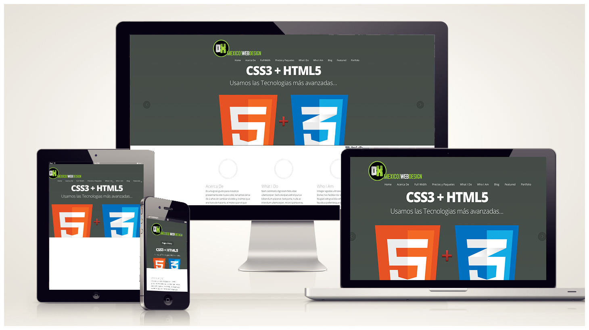

El diseño web es una actividad que consiste en la planificación, diseño, implementación, y mantenimento de sitios web. No es simplemente la implementación del diseño convencional ya que abarcan diferentes aspectos como el diseño gráfico web, diseño de interfaz y experiencia de usuario, como la navegabilidad, interactividad, usabilidad, arquitectura de la información; interacción de medios, entre los que podemos mencionar audio, texto, imagen, enlaces, video y la optimización de motores de búsqueda. A menudo muchas personas trabajan en equipos que cubren los diferentes aspectos del proceso de diseño, aunque existen algunos diseñadores independientes que trabajan solos.
El diseño web ha visto amplia aplicación en los sectores comerciales de Internet especialmente en la World Wide Web. A menudo la web se utiliza como medio de expresión plástica en sí. Artistas y creadores hacen de las páginas en Internet un medio más para ofrecer sus producciones y utilizarlas como un canal más de difusión de su obra.
El diseño web implica conocer cómo se deben utilizar cada uno de los elementos permitidos en el HTML, es decir, hacer un uso correcto de este lenguaje dentro de los estándares establecidos por la W3C y en lo referente a la web semántica. Debido a la permisibilidad de algunos navegadores web como Internet Explorer, esta premisa original se ha perdido. Por ejemplo, este navegador permite que no sea necesario cerrar las etiquetas del marcado, utiliza código propietario, etc. Esto impide que ese documento web sea universal e independiente del medio que se utilice para ser mostrado.
Clic aquí para ir a Google

Creado y desarrollado por
Dylan Paul Bustos Mauricio